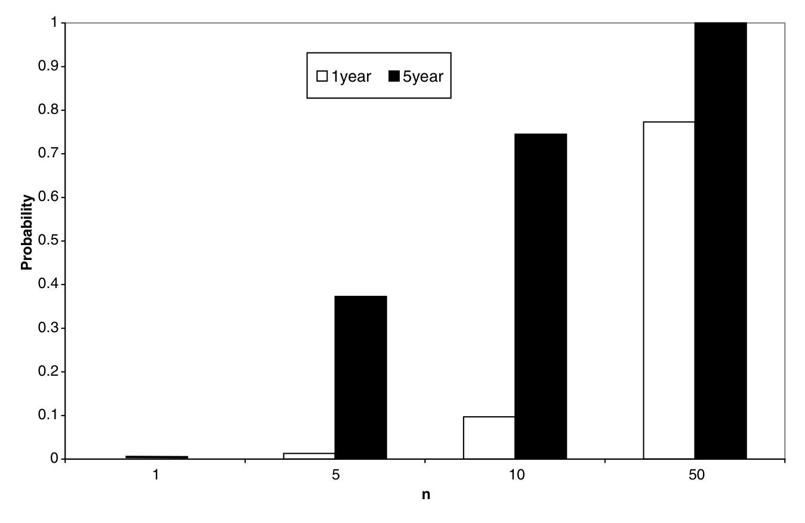
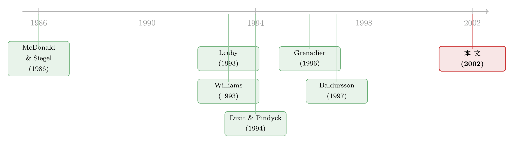

对手就在隔壁磨刀，你还敢「再等等」吗？
本文读的是 Grenadier (2002, Review of Financial Studies)：当一群企业争夺同一类投资机会时，实物期权里那个被奉为圭臬的「等待价值」会被竞争迅速侵蚀——哪怕行业里只有寥寥几个对手，企业也几乎会在净现值（NPV）刚刚跨过零的那一刻就出手。作者还给出了一个出人意料的解法：这个看似复杂的连续时间古诺—纳什博弈，可以当成一个「近视」的单期权问题、甚至一个虚构的完全竞争经济来求解。
1 一个让 NPV 法则「翻案」的故事，和它的漏洞
先讲一个金融学里人人都会背的结论。
传统的净现值法则说：只要一个项目的 NPV 非负，就该投。可实物期权 (real options) 理论把这条法则按在地上摩擦了三十年。它的逻辑是：投资机会就像一张看涨期权——标的资产的价值是随机游走的，今天投下去就等于把这张期权行权了，于是你永久放弃了「再看看」的权利。这份权利本身有价值，叫做等待的期权（option to wait）。所以最优的做法不是「NPV≥0 就投」，而是要等到资产价值远远超过投资成本、把那块期权溢价也赚回来才动手。Dixit 和 Pindyck (1994) 那句名言说得最狠：「简单的 NPV 法则不只是错的，它常常错得离谱。」
这套逻辑漂亮、自洽，也写进了几乎每一本公司金融教科书。
但它有一个被悄悄藏起来的前提：这张期权是你一个人的。
McDonald 和 Siegel (1986) 那个奠基性的框架里，标的资产的价值是外生给定的（就像 Black–Scholes 里的股价），你一个人慢慢盘算什么时候行权最划算，没人会来抢。可现实里的投资机会几乎从不是独占的。你在盘算要不要砸钱做研发，隔壁竞争对手也在盘算同一件事；你在犹豫要不要盖那栋写字楼，全城的开发商都盯着同一片需求。一旦你「再等等」，对手可能就先动手了——等你回过神，市场已经被供给填满，那栋楼盖起来时租金和入住率早已塌掉。
这就是本文的张力所在：等待是有价值的，但抢先也是有价值的。 当「怕被抢」这件事进入决策，等待的期权还剩多少？这不是一个能孤立求解的最优停时问题，而必须是一个博弈均衡。
接着，一个自然的问题是：怎么把「竞争」严谨地塞进实物期权？这正是 Grenadier (2002) 要解决的——他要在一个连续时间的古诺—纳什（Cournot–Nash）框架里，求出一整个寡头行业的均衡投资（行权）策略。
2 模型：把一个行业的「行权扳机」一起解出来
我们一步一步把模型搭起来。
行业与需求。 考虑一个由 \(n\) 家相同企业组成的寡头行业，生产同一种同质商品。\(t\) 时刻企业 \(i\) 的产量为 \(q_i(t)\)，行业总产量 \(Q(t)=\sum_{j=1}^{n} q_j(t)\)。产品价格由市场出清决定：
$$P(t) = D\big(X(t), Q(t)\big)$$
这里 \(D\) 是反需求函数，对总供给 \(Q\) 严格递减；\(X(t)\) 是一个外生的需求冲击（demand shock），对它严格递增。注意这里和标准实物期权最大的不同：标的不再是外生的资产价值，而是这个外生的需求冲击 \(X\)——资产（投资）真正的回报是内生的，因为它取决于所有人的产量。
利润流。 假设无可变成本，单位产出的现金流就是价格本身。记除企业 \(i\) 之外的产量为 \(Q_{-i}(t)=\sum_{j\neq i} q_j(t)\)，则企业 \(i\) 的瞬时利润流为
$$\pi_i\big(X, q_i, Q_{-i}\big) \equiv q_i \cdot D\big(X,\, q_i + Q_{-i}\big)$$
不确定性。 唯一的随机源 \(X(t)\) 服从一个时齐扩散过程：
$$dX = \mu(X)\,dt + \sigma(X)\,dz$$
其中 \(z(t)\) 是维纳过程。这个写法足够一般，几何布朗运动、算术布朗运动、均值回复的平方根过程都是它的特例。现金流在风险中性框架下贴现，无风险利率为 \(r\)。
投资的本质：一串边际期权。 每一瞬间，企业可以付出单位成本 \(K\) 把产量增加一个无穷小增量 \(dq_i\)。于是企业 \(i\) 的决策可以拆成「一连串关于边际投资的美式永久期权」：对每一个当前产量水平 \(q_i\)，它握着一张期权——以 \(K\cdot dq\) 为行权价，去换取「把产量提高 \(dq\)」带来的那一缕边际利润流。
接着是关键的一步：企业 \(i\) 在行权时，对手也在行权。企业 \(i\) 能控制自己的 \(q_i(t)\)，却控制不了对手的 \(Q_{-i}(t)\)，而后者直接决定了它行权的回报。这正是「期权行权博弈」的核心——你的期权值多少钱，取决于别人什么时候行使他们的期权。
2.1 单个企业的估值方程与三个边界条件
先固定对手的策略：假设对手会在 \(X(t)\) 升到某个触发函数 \(X^{-i}(q_i, Q_{-i})\) 时增产。记此时企业 \(i\) 的价值为 \(F^i\)。在没有任何新投资发生的区域里，由伊藤引理可得 \(F^i\) 满足的均衡微分方程（让资产的期望回报率等于 \(r\)，整理即得）：
这个方程要配上三个边界条件，缺一不可：
(1) 价值匹配（value-matching）——在自己的触发点 \(X^i\)。 行权那一刻，多增 \(dq\) 的产量、付出 \(K\cdot dq\) 的成本，价值在行权前后连续。除以 \(dq\) 写成导数形式：
$$\frac{\partial F^i}{\partial q_i}\big(X^i(q_i,Q_{-i}),\, q_i,\, Q_{-i}\big) = K$$
直觉：行权的边际收益恰好等于边际成本 \(K\)。
(2) 平滑粘合（smooth-pasting）——触发点的最优性。 它保证 \(X^i\) 是最优选取的，而不是随便挑的：
$$\frac{\partial^2 F^i}{\partial q_i\,\partial X}\big(X^i,\, q_i,\, Q_{-i}\big) = 0$$
Dumas (1991) 把瞬时控制问题里的这个条件称作「超接触（super-contact）」条件，它是标准期权定价里「高接触」条件的推广。
(3) 价值匹配——在对手的触发点 \(X^{-i}\)。 当对手增产、\(Q_{-i}\) 跳升一个增量时，企业 \(i\) 的价值同样连续：
$$\frac{\partial F^i}{\partial Q_{-i}}\big(X^{-i}(q_i,Q_{-i}),\, q_i,\, Q_{-i}\big) = 0$$
把这三条凑齐，再加上对称性（相同企业 → 对称均衡，\(q_i^*=Q^*/n\)），均衡触发函数 \(X^*(q_i,Q_{-i})\) 就由一个函数空间里的不动点问题给定：你猜对手的触发函数是 \(X^*\)，解出自己的最优触发也必须是 \(X^*\)，自洽即为均衡（Proposition 1）。
听上去就让人头大——一个函数空间里的不动点，连数值求解都棘手。如果故事到此为止，这篇论文也就只是又一个「漂亮但没人能用」的理论。真正关键的一步，在下一节。
3 反转：把博弈「降维」成一个近视的单人问题
然后，本文最聪明的地方出现了。
作者证明：那个令人生畏的不动点问题，其解 \(X^*(q_i,Q_{-i})\) 恰好等于一个「近视（myopic）」期权问题的最优触发——所谓近视，就是企业在做决策时完全无视对手未来还会继续行权这件事，把对手当前的产量当成永远冻结。
为什么能这样？秘密就藏在第三个边界条件 \(\partial F^i/\partial Q_{-i}=0\) 里。它说的是：在对手行权的那一刻，企业 \(i\) 的价值对对手产量的变化不敏感。 既然在对手行动的边际上自己的价值毫无变化，那么「预期对手将来会动手」这件事，对企业当下的最优触发就没有一阶影响。于是那个需要前瞻、需要解不动点的博弈，塌缩成了一个不需要前瞻、可以直接套用标准实物期权公式的单人问题。
这一招，把一个连续时间博弈的求解难度，降到了和教科书里单个企业的实物期权问题一样。它也直接呼应了 Leahy (1993) 的一个经典洞见：在完全竞争的投资均衡里，「近视」的企业（无视别人、也无视自己未来会撞上的行业天花板）做出的决策，竟然和深谋远虑的企业一模一样。Grenadier 把这条「近视最优性」从完全竞争推广到了寡头。
更进一步，作者还证明了一个等价表述：把行业需求曲线按特定方式变换一下，寡头的均衡行权策略可以当成一个虚构的完全竞争行业来求解；而完全竞争的策略，又可以由一个中央计划者最大化社会剩余路径来得到（Lucas & Prescott, 1971; Dixit, 1989b）。一个寡头博弈，最后被解成了单个主体的最优化问题——这才使得加入「建造时滞（time-to-build）」这类原本在产业均衡里极难处理的特征成为可能（Grenadier, 2000a）。
4 主要结果：等待的期权，一碰竞争就「蒸发」
有了简单的解，结论就掷地有声了。
第一，竞争把等待的期权几乎清零。 对一个垄断者来说，等待的期权确实很值钱：在合理的参数下，垄断者可能要等到投资的 NPV 达到投资成本的两倍（即资产价值约为 \(2K\)）才肯出手。但一旦引入竞争，传统的 NPV 法则就近似成立了——而且哪怕行业里只有少数几个竞争者，企业的行权触发就已经逼近 NPV=0 的那条线。怕被抢先（preemption）这件事，让「再等等」变成了一种奢侈。
这恰好把实物期权和最朴素的直觉重新调和了：教科书告诉你「别用 NPV 法则」，但现实里大多数行业是有竞争的，于是 NPV 法则又悄悄变回了近似正确。垄断者才是那个例外——这也解释了为什么企业愿意花费巨大的资源去保护自己的市场地位：它们守护的，正是那块只有独占者才享有的、肥厚的等待期权溢价。
第二，竞争让「事后亏损」从罕见变成常态。 这是一个很有现实质感的推论。在传统实物期权框架里，垄断者要等到很高的期权溢价才投资，所以事后资产价值大幅反转、跌破投资成本的情形极其罕见——这也是为什么标准模型很难解释房地产那种周期性「过度建设→高空置→断供」的繁荣—萧条循环。但本文指出：竞争越激烈，期权溢价越薄，企业出手时离 NPV=0 越近，于是事后资产价值跌破成本的概率就大幅上升。如图 2 所示，随着行业竞争者数目的增加，事后投资亏损的可能性单调走高——这给「过度建设」这类老问题提供了一个干净的均衡解释。

Figure 2: provides simulation results for the likelihood of ex post invest-
（关于 Grenadier 把这套均衡进一步用到行业产出与价格行为上的姊妹篇，可参见《对手越多，价格越疯：把「等待的期权」装进一整个行业的电网里》；而对「竞争反而让企业更想等」这一相反直觉的探讨，可对照《竞争越激烈，反而越要「等」？》。)
5 文献脉络
把这条线索捋一捋，会看得更清楚。
最早，McDonald 和 Siegel (1986) 奠定了单个企业、外生资产价值下的连续时间实物期权框架，「等待的价值」由此成名；Dixit 和 Pindyck (1994) 则把这套方法集大成。但这一脉的共同软肋，是把行权策略当成孤立的最优停时问题来解。
转折来自两个方向。一是 Leahy (1993) 证明了在完全竞争投资均衡里「近视行为」的最优性——这为后来把博弈「降维」埋下了伏笔。二是 Williams (1993) 第一次在实物期权框架里严谨地推导出纳什均衡，并发现竞争加剧会让期权更早被行使；不过他的行业结构与本文不同，且不适用本文那套近视解法。Grenadier 自己 (1996) 用期权行权博弈解释了房地产的开发瀑布与过度建设。Baldursson (1997) 给出了与本文很接近的寡头均衡，但其解法只适用于线性需求这一狭窄设定。Lambrecht 和 Perraudin (1999) 则刻画了不完全信息下、企业争夺单一投资机会的抢先博弈。

Grenadier (2002) 的位置就清楚了：它在 Williams 和 Baldursson 之上，提供了一个对一般需求设定都适用、且能塌缩成单人问题的通用而可解的寡头均衡框架——既继承了 Leahy 的近视洞见，又把它推广到了寡头，还借此打通了建造时滞等更复杂的扩展。
6 评论与延伸（Q&A + 研究方向）
(a) 几个可能的疑问
Q：这和「单人实物期权」到底差在哪，会不会只是换了层皮？
差在标的是否内生。McDonald–Siegel 里标的资产价值外生给定，你独享一张期权慢慢挑行权时机。这里投资回报由全行业产量内生决定，必须解纳什均衡。结论也相反：单人模型说「别用 NPV 法则」，本文说「有竞争时 NPV 法则近似对」。
Q：「近视解法」是偷懒的近似，还是严格成立？
严格成立，不是近似。它来自边界条件 \(\partial F^i/\partial Q_{-i}=0\)——在对手行权的边际上企业价值不敏感，所以「预期对手将来会动手」对自己当下的最优触发没有一阶影响。于是博弈精确地等价于一个无视对手未来行权的近视单人问题。
Q：为什么只有「几个」竞争者就足以让期权溢价蒸发？
因为驱动出手的是抢先动机：只要存在哪怕一个可能抢在你前面的对手，「再等等」就要承担被填满市场的风险。这个威胁是离散的、非边际的，所以不需要竞争者数目趋于无穷，少数几个就能把等待价值压得很薄。
Q：把寡头博弈解成「虚构的完全竞争 / 中央计划者问题」，凭什么？
凭对需求曲线的一次特定变换。变换后寡头的均衡触发策略与某个完全竞争行业一致，而完全竞争策略又可由中央计划者最大化社会剩余路径得到（Lucas & Prescott, 1971; Dixit, 1989b）。注意这只对「行权策略」等价，不代表寡头与完全竞争在福利或产量上等同。
Q：模型假设企业完全同质，这会不会太强？
同质性主要是为了把状态空间从 \(n+1\) 维压到 \(X\) 与 \(Q\) 两维、聚焦对称均衡。Baldursson (1997) 数值地处理了初始产能不同的企业，并发现经过足够长时间后会收敛到对称均衡——所以这更像是简化而非致命假设。
Q：它真能解释房地产那种繁荣—萧条吗？
它提供的是机制而非实证检验。本文用图 2 论证「竞争者越多、事后亏损概率越高」，从而让过度建设在均衡里变得自然——这是标准垄断式实物期权解释不了的。但这是模型推演，真正落到房地产数据上的检验仍待经验研究补足。
(b) 几个可能的研究问题与提案
1. 把「期权行权博弈」搬到公司债的发行时点上。 【经济故事】发债（尤其是借新还旧、抢占信用市场窗口）很像行使一份「融资期权」：当市场利差收窄、需求旺盛时，谁先发谁占便宜，后发者面对的是被供给填满、利差走阔的市场。本文的抢先逻辑预测：同业竞争越激烈，企业越会在「窗口」刚打开就抢发，而不是等到最优时点。 【可行性】中。数据可得（Mergent FISD 发行明细 + TRACE 二级流动性 + 同行业发行人聚类），识别可借助行业层面的需求冲击或评级机构事件。难点在于刻画「谁是谁的抢先对手」，需要构造合理的同业网络。
2. 外资持有人会改变「抢先 vs 等待」的均衡吗？ 【经济故事】若一个行业里既有本土企业又有外资企业，二者的贴现率、信息与退出选择不同，可能打破对称均衡，使抢先动机在两类玩家间不对称。这能把实物期权博弈与外资行为这两条线索接起来。 【可行性】中偏低。需要跨国企业层面的投资时点数据，且要把异质贴现率内生进均衡，理论上可做但实证识别外资的「抢先效应」很难与基本面差异分离。
3. 用事后亏损率检验「竞争 → 薄期权溢价」。 【经济故事】本文图 2 的核心可观测含义是：行业竞争度越高，新增产能事后变成亏损（资产价值跌破成本）的概率越高。这是一个可直接拿到数据里检验的横截面预测。 【可行性】高。以行业 HHI 或企业数衡量竞争，以新增产能项目的事后回报（如减值、关停、资产甩卖）衡量「事后亏损」，跨行业回归即可。内生性可用需求冲击或反垄断/进入管制变化作为外生变异。
4. 把流动性折价嵌入退出期权。 【经济故事】本文只有「投资（行权）」期权，没有刻画退出。但在公司债与信用市场，资产「卖不掉」本身就是一种摩擦——当企业事后想撤资时，流动性枯竭会放大繁荣—萧条。把退出期权与流动性折价加进这个博弈，可能预测出更剧烈的过度建设。 【可行性】中。理论扩展自然（在 \(Q\) 可双向调整时加入退出触发），但要校准流动性折价需要 OTC 市场的成交数据。
7 我的判断
这是一篇典型的「以巧取胜」的理论论文：它真正的贡献不在于发现了「竞争侵蚀等待价值」这个方向性结论（Williams 1993 已有类似发现），而在于找到了一把让一般化的连续时间寡头行权博弈变得可解的钥匙——近视解法与虚构竞争均衡的等价性。正是这把钥匙，让模型能进一步容纳建造时滞、随机需求形态等原本棘手的特征，把一个理论玩具变成了可推广的分析工具。从「事后亏损概率随竞争上升」这一推论，它还顺手给房地产等繁荣—萧条市场提供了标准实物期权框架给不出的解释。
要说担忧，主要有两点。其一，近视解法的优雅依赖于一组相当干净的假设——同质企业、对称均衡、利润对自身产量的凹性、\(X\) 进入触发策略的单调结构。一旦企业异质、需求形态不规则，那个让博弈塌缩的边界条件未必继续成立，解法的普适性会打折。其二，这是一个没有任何实证检验的纯理论模型；「少数几个竞争者就足以抹平期权溢价」「事后亏损概率随 \(n\) 上升」这些都是干净的可检验命题，却始终停留在仿真层面。
后续我最想看到的，是有人把图 2 那条「竞争—事后亏损」曲线真正拖到数据里去检验，最好是借一次进入管制放开或反垄断冲击做出外生变异；以及把这套行权博弈从「投资」延伸到「融资」与「退出」，看看当抢先动机遇上流动性摩擦，繁荣—萧条会被放大还是被熨平。
参考文献
Baldursson, F. (1997). Irreversible Investment Under Uncertainty in Oligopoly. Journal of Economic Dynamics and Control 22, 627–644.
Dixit, A. (1989b). Hysteresis, Import Penetration, and Exchange Rate Pass-Through. Quarterly Journal of Economics 104, 205–228.
Dixit, A. K., & Pindyck, R. S. (1994). Investment Under Uncertainty. Princeton University Press, Princeton, NJ.
Dumas, B. (1991). Super Contact and Related Optimality Conditions. Journal of Economic Dynamics and Control 15, 675–695.
Grenadier, S. R. (1996). The Strategic Exercise of Options: Development Cascades and Overbuilding in Real Estate Markets. Journal of Finance 51, 1653–1679.
Grenadier, S. R. (2000a). Equilibrium with Time-to-Build: A Real Options Approach. In M. Brennan & L. Trigeorgis (eds.), Project Flexibility, Agency, and Competition, Oxford University Press, Oxford.
Grenadier, S. R. (2002). Option Exercise Games: An Application to the Equilibrium Investment Strategies of Firms. Review of Financial Studies 15(3), 691–721.
Lambrecht, B., & Perraudin, W. (1999). Real Options and Preemption Under Incomplete Information. Working paper, Cambridge University.
Leahy, J. V. (1993). Investment in Competitive Equilibrium: The Optimality of Myopic Behavior. Quarterly Journal of Economics 108, 1105–1133.
Lucas, R. E., Jr., & Prescott, E. C. (1971). Investment Under Uncertainty. Econometrica 39, 659–681.
McDonald, R., & Siegel, D. (1986). The Value of Waiting to Invest. Quarterly Journal of Economics 101, 707–727.
Williams, J. T. (1993). Equilibrium and Options on Real Assets. Review of Financial Studies 6, 825–850.